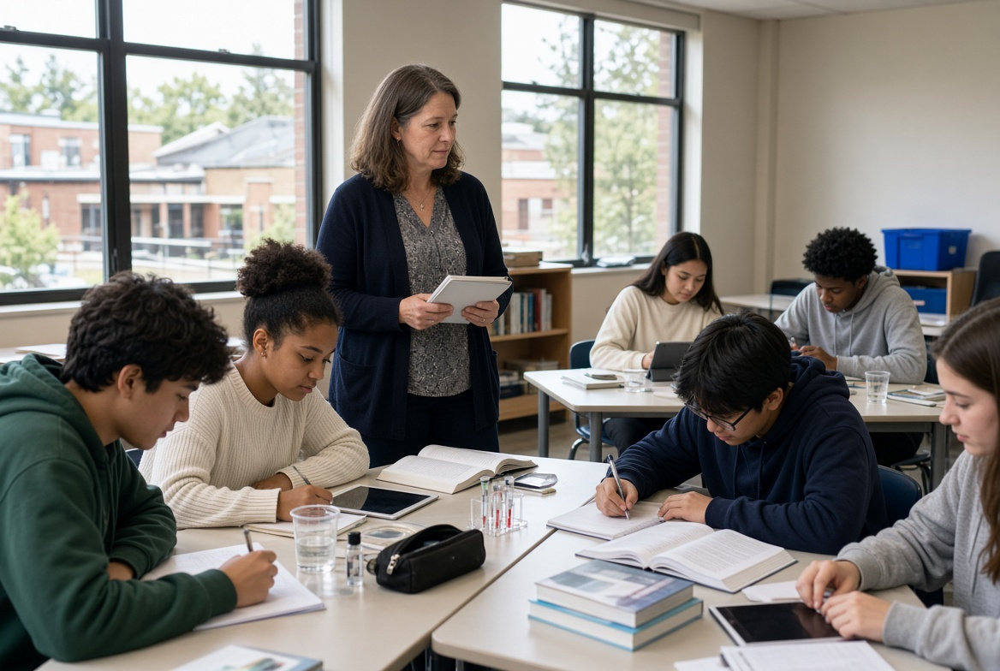

Los modelos de diseño curricular son enfoques o propuestas que orientan la organización, planificación y desarrollo de los contenidos, objetivos, actividades y evaluaciones dentro de un proceso educativo. Su propósito es facilitar la enseñanza y favorecer el aprendizaje de los estudiantes.
¿Cuáles son sus beneficios?
1. Organización de la enseñanza: permiten estructurar los contenidos y las actividades de manera ordenada y coherente.
2. Claridad de objetivos: ayudan a establecer qué aprendizajes se espera que alcancen los estudiantes.
3. Mejora del aprendizaje: favorecen la selección de estrategias didácticas adecuadas para comprender los contenidos.
4. Adaptación al contexto: permiten considerar las necesidades, características e intereses de los alumnos.
5. Evaluación del aprendizaje: facilitan identificar los avances y las dificultades de los estudiantes.
6. Orientación docente: ofrecen una guía para planificar las clases y seleccionar materiales educativos.
7.Mejora continua: permiten revisar y ajustar los planes de estudio para responder a las necesidades educativas.
Ejemplos de modelos de diseño curricular:
Este es el modelo más clásico, iniciado por Bobbitt y derivado de la preocupación por los resultados de la enseñanza; es decir, concibe la educación como un medio para alcanzar fines. En este modelo los objetivos cobran mayor importancia, al respecto Tyler describe que un objetivo es “un enunciado que ilustra o describe la clase de comportamiento que se espera que el estudiante logre de modo tal que cuando el comportamiento sea alcanzado, este sea reconocido” Este modelo se basa en cuatro aspectos:
• Determinar los fines que desea alcanzar la escuela: se analiza en este punto al alumno, la vida exterior a la escuela
• Seleccionar las experiencias educativas: Se eligen aquellas que conduzcan al mejor logro de estos fines.
• Organizar las experiencias educativas: Se otorga un orden a las actividades y experiencias a través de unidades, cursos y programas.
• Comprobar el logro propuesto: Corresponde a la evaluación de resultados, es decir, en qué medida el currículum y la enseñanza satisfacen los objetivos formulados.
Este modelo pretende flexibilizar el diseño, rechazando la idea de someter los contenidos y actividades de aprendizaje a la especificación de objetivos de comportamiento, concibiendo al conocimiento humano como algo vivo, producto del pensamiento del hombre, pero que también está en construcción. En este modelo resalta la diferencia entre objetivos de instrucción (objetivos de ejecución, aquellos que encaminan al alumno hacia una conducta previamente determinada) y los objetivos expresivos (que describen una situación de aprendizaje, e identifican una actividad en la que se encontrará sumergido el aprendiz o un problema que tendrá que resolver, sin mencionar lo que tiene.
Por último, Stenhouse propone el modelo de investigación, el cual busca un compromiso más profundo por parte del profesor, ya que en este modelo el currículum se concibe como una investigación de la cual emanan permanentemente propuestas de innovación. Desde esta perspectiva emanan las siguientes características: - En este modelo, el diseñador es percibido como un investigador. El currículum está pensado más en términos hipotéticos que en un producto acabado. El currículo se plantea como la investigación de problemas a solucionar. El currículo debe recoger las variables del contexto de la escuela y su ambiente. La participación del profesor es fundamental, puesto que él mismo debe estudiar su enseñanza.
